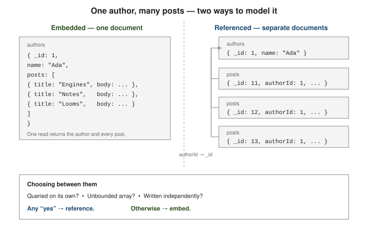

Schema design for the document model
|
This content was generated with the assistance of AI and should be verified against the official documentation before being relied on in production. |
MongoDB has no mandatory collection schema, so schema design is an application concern rather than a CREATE
TABLE step. The central decision is how to distribute related data across documents and collections: what to
embed, what to reference, and how much to duplicate.
Embed or reference
The guiding principle is data that is accessed together is stored together. Embedding a related object puts
it in the same document, so one read returns everything and one write updates it atomically. Referencing keeps
it in a separate document linked by _id.

// embedded: address travels with the user and is only ever read with it
{ "_id": "u-1", "name": "Ada",
"address": { "street": "1 Loom St", "city": "Turin", "zip": "10100" } }// referenced: each post is its own document, linked by authorId
// authors
{ "_id": 1, "name": "Ada" }
// posts
{ "_id": 11, "authorId": 1, "title": "Engines", "body": "..." }
{ "_id": 12, "authorId": 1, "title": "Notes", "body": "..." }Decide with these factors (data modeling overview):
-
Bounded vs. unbounded arrays. An embedded array that can grow without limit will eventually approach the hard 16 MB per-document ceiling (BSON document size limit) and slows every read of the parent even when the array is not needed. Embed only arrays with a known, small upper bound.
-
Read/write ratio. Embedding favours read-heavy access — one round trip, no join. Referencing favours data that is written independently or updated far more often than the parent, so a large document is not rewritten on every change.
-
Single-document atomicity. A write to one document is atomic without a transaction, so fields that must stay mutually consistent are safer embedded. Spanning documents needs a multi-document transaction — see Transactions.
-
Queried on its own? If the child is frequently queried or sorted by itself, it wants to be its own document (and its own indexes) — see Indexes.
A workable order in which to take these decisions is to start from the queries, not from the entities:
Relationship cardinality
| Cardinality | Typical modelling |
|---|---|
1:1 |
Embed (user + profile), unless the sub-part is large and rarely read. |
1:few (bounded) |
Embed as an array — order + line items, article + a handful of tags. |
1:many |
Reference from the many side ( |
many:many |
Arrays of |
// many:many by id arrays
{ "_id": "std-1", "name": "Ada", "courseIds": ["c-1", "c-2"] }
// many:many via a join collection that also stores relationship data
{ "_id": 1, "studentId": "std-1", "courseId": "c-1", "grade": "A", "enrolledAt": { "$date": "2026-02-01T00:00:00Z" } }High-cardinality relationships such as friends / followers are never embedded in full: store each edge as
its own document, index both directions, and page through them. Keep a small followerSample array and a
followerCount on the profile (the Computed pattern below) for display.
// followers collection: one document per edge
{ "_id": 1, "follower": "u-9", "followee": "u-1" }
{ "_id": 2, "follower": "u-4", "followee": "u-1" }See the data modeling overview for the cardinality guidance in full.
Normalization vs. denormalization
The relational baseline stores each fact once and reconstructs rows with joins — see Normalization. The document model often does the opposite: it copies a few slow-changing fields into the documents that read them so the join disappears.
The price is write-time consistency. When a duplicated value changes, every copy must be updated, and readers can briefly see stale copies. Duplicate only fields that rarely change (a name, a city), and keep one clearly identified source of truth.
// denormalized: product name copied onto each order line
// { _id: "o-1", lines: [ { sku: "A-1", name: "Desk", qty: 2 } ] }
// when a product is renamed, a background job refreshes the copies
// https://www.mongodb.com/docs/manual/data-modeling/
db.orders.updateMany(
{ "lines.sku": "A-1" },
{ $set: { "lines.$[l].name": "Standing Desk" } },
{ arrayFilters: [ { "l.sku": "A-1" } ] }
)Worked example: designing the shop
The shop database used throughout this section has three entities: customers, products and orders. The queries
that matter are "show an order with its lines and the customer’s name" (very frequent, read-heavy), "list a
customer’s recent orders" (frequent), "decrement stock when an order is placed" (frequent, write), and "rename a
customer or a product" (rare). The decisions that follow from those queries are:
Order lines are embedded in the order. An order has a handful of lines, is read as a unit, and is written
once. The alternative — a separate order_lines collection — needs two reads or a $lookup for the same
answer. Both models were built and run:
// Referenced: the order and its lines are separate documents, joined at read time
shop> db.orders_ref.aggregate([ { $match: { _id: 1001 } },
... { $lookup: { from: "order_lines", localField: "_id", foreignField: "orderId", as: "items" } } ])
[ { _id: 1001, customerId: 'c-1', status: 'shipped',
items: [ { _id: ObjectId('...'), orderId: 1001, sku: 'A-1', qty: 1, price: 349 },
{ _id: ObjectId('...'), orderId: 1001, sku: 'B-7', qty: 2, price: 24.99 } ] } ]
// Embedded: one document, one read, nothing to join
shop> db.orders.findOne({ _id: 1001 })The referenced model also pays for an extra index (order_lines.orderId) and for a line _id nobody asked for.
Customer name and city are copied into the order (Extended Reference). Showing an order together with the
customer’s name would otherwise need a $lookup on every order list. Copying { _id, name, city } — fields that
change rarely — removes the join; keeping the full customers document as the source of truth keeps the copy
fixable. The same applies to the product name on each line. The resulting order document is 263 bytes:
shop> db.orders_b.findOne({ _id: 1001 })
{
_id: 1001,
status: 'shipped',
orderDate: ISODate('2026-01-05T10:00:00.000Z'),
items: [
{ sku: 'A-1', qty: 1, price: 349, name: 'Standing Desk' },
{ sku: 'B-7', qty: 2, price: 24.99, name: 'Desk Lamp' }
],
customer: { _id: 'c-1', name: 'Ada Lovelace', city: 'London' }
}
shop> bsonsize(db.orders_b.findOne({ _id: 1001 }))
263The price of the copy is the rename. When a customer changes name, one update fixes the source and a second fixes every duplicate — two writes the application (or a change-stream consumer, see Reacting to Data Changes) must remember:
shop> db.customers.updateOne({ _id: "c-1" }, { $set: { name: "Augusta Ada King" } })
shop> db.orders_b.updateMany({ "customer._id": "c-1" }, { $set: { "customer.name": "Augusta Ada King" } })
{ acknowledged: true, insertedId: null, matchedCount: 1, modifiedCount: 1, upsertedCount: 0 }Note which price is stored in the line: the unit price at the time of the order. That is deliberate duplication of a different kind — an immutable snapshot — and must not be "fixed" when the catalogue price changes.
Reviews are referenced, with a Subset and a Computed summary on the product. Product reviews are unbounded. Embedding all of them makes the product document grow with every review; 2000 embedded reviews of about 250 bytes each took the document to 495,812 bytes, so the 16 MB limit is reached at roughly 67,000 reviews — and long before that every read of the product drags all of them along. The pattern keeps every review in its own collection, plus the last three and two counters on the product:
function addReview(sku, user, stars, text) {
db.reviews.insertOne({ sku, user, stars, text, at: new Date() });
db.products_s.updateOne({ _id: sku },
{ $inc: { reviewCount: 1, ratingSum: stars },
$push: { recent: { $each: [{ user, stars, text }], $slice: -3 } } });
}
for (let i = 1; i <= 5; i++) addReview("A-1", "u" + i, (i % 5) + 1, "review " + i);
shop> db.products_s.findOne()
{ _id: 'A-1', name: 'Standing Desk', reviewCount: 5, ratingSum: 15,
recent: [ { user: 'u3', stars: 4, text: 'review 3' }, { user: 'u4', stars: 5, text: 'review 4' }, { user: 'u5', stars: 1, text: 'review 5' } ] }
shop> db.reviews.countDocuments({ sku: "A-1" })
5
shop> db.products_s.aggregate([ { $project: { name: 1, avg: { $round: [{ $divide: ["$ratingSum", "$reviewCount"] }, 2] } } } ])
[ { _id: 'A-1', name: 'Standing Desk', avg: 3 } ]The product page now reads one document: name, average, and the three newest reviews, with the full history one indexed query away. The two writes are not atomic with each other; if a failure between them is unacceptable, wrap them in a transaction (see Transactions) or accept that the counters are repaired by a periodic recomputation.
Bounded, time-ordered measurements are bucketed. A sensor, or the shop’s stock-level history, produces one tiny
document per reading, with an index entry each. The Bucket pattern folds a window’s readings into one document
with running totals. An upsert that appends to the current hour’s bucket while it has room (count < 60), and
opens a new one otherwise, did this:
shop> for (let m = 0; m < 5; m++) db.readings.updateOne(
... { sensor: 7, hour: ISODate("2026-03-01T14:00:00Z"), count: { $lt: 60 } },
... { $push: { r: { m, v: 20 + m } }, $inc: { count: 1, sum: 20 + m } }, { upsert: true })
shop> db.readings.findOne({}, { _id: 0 })
{ sensor: 7, hour: ISODate('2026-03-01T14:00:00.000Z'), count: 5,
r: [ { m: 0, v: 20 }, { m: 1, v: 21 }, { m: 2, v: 22 }, { m: 3, v: 23 }, { m: 4, v: 24 } ], sum: 110 }Five readings, one document, one index entry, and sum / count is the hourly average without touching the array.
For genuine time series workloads a time series collection (see
Databases, Collections & Schema Control) applies the same
idea inside the server.
Hierarchies keep their ancestors. Categories (tech > hw > monitors) are a tree. Storing each node’s
ancestors array and indexing it answers the question "what is under hw?" with one indexed equality, where a parent-only
model would need a recursive $graphLookup:
shop> db.cats.insertMany([ { _id: "tech", ancestors: [] }, { _id: "hw", ancestors: ["tech"] },
... { _id: "monitors", ancestors: ["tech", "hw"] }, { _id: "sw", ancestors: ["tech"] } ])
shop> db.cats.createIndex({ ancestors: 1 })
shop> db.cats.find({ ancestors: "hw" }, { _id: 1 })
[ { _id: 'monitors' } ]The cost is that moving a subtree rewrites the ancestors of every descendant, which is acceptable when the
hierarchy changes rarely and is read constantly.
Schema design patterns
The following patterns recur across document schemas (design patterns catalog).
Bucket — collapse many small rows (time-series readings, log lines) into one document per time window, carrying pre-aggregated fields.
{ "_id": { "sensor": 7, "hour": { "$date": "2026-08-30T14:00:00Z" } },
"count": 60, "sum_v": 1284.0,
"readings": [ { "t": 0, "v": 21.4 }, { "t": 1, "v": 21.5 } ] }Computed — store the result of an aggregation next to the source data, refreshed on write or on a schedule, so reads never recompute it.
{ "_id": "movie-1", "title": "Ronin",
"ratingCount": 1204, "ratingSum": 5418, "ratingAvg": 4.5 }Subset — keep only the hot slice of a large related set in the main document; the rest lives in another collection.
{ "_id": "prod-9", "name": "Desk",
"recentReviews": [ /* last 5 */ ], "reviewCount": 812 }Extended Reference — copy the handful of fields you always display from a referenced document, not just its
_id, to avoid a $lookup on the hot path.
{ "_id": "order-5",
"customer": { "_id": "c-1", "name": "Ada", "city": "Turin" },
"lines": [ /* ... */ ] }Schema Versioning — tag every document with a version so the application can handle old and new shapes side by side.
{ "_id": 1, "schemaVersion": 3, "name": "Ada", "emails": ["a@x.io"] }Outlier — handle the rare oversized document with a flag plus an overflow collection, so the common case stays small.
{ "_id": "u-1", "name": "Ada", "followerSample": [ /* ... */ ], "hasMany": true }Polymorphic — store related-but-differently-shaped entities in one collection with a discriminator field.
{ "_id": 1, "kind": "car", "wheels": 4, "doors": 5 }
{ "_id": 2, "kind": "boat", "hullLength": 9.2 }Tree / Graph — model a hierarchy with a parent reference, an ancestors array, and/or a materialized
path; traverse it with $graphLookup (see The aggregation
framework).
{ "_id": "c", "parent": "b", "ancestors": ["a", "b"], "path": ",a,b," }Anti-patterns
Common mistakes, with fixes (schema anti-patterns):
-
Massive, unbounded arrays — switch to the Bucket or Subset pattern, or reference from the many side.
-
Bloated documents carrying fields most queries never read — project less, or split with the Subset pattern.
-
Too many collections, many of them tiny — each collection has a namespace and per-index overhead; a polymorphic collection is often better.
-
Unindexed case-insensitive queries — a
findwith a collation that no index shares forces a collection scan. Create the index with the same collation (case-insensitive indexes).
db.users.createIndex({ email: 1 }, { collation: { locale: "en", strength: 2 } })
db.users.find({ email: "ADA@x.io" }).collation({ locale: "en", strength: 2 })The fix can be verified. With a collation-aware index on the shop’s customers.email, a case-insensitive query
uses it (1 key, 1 document examined, 1 returned); without the matching collation the same query returns nothing,
because ADA@EXAMPLE.COM is not the stored string, and scans all four documents:
shop> db.customers.createIndex({ email: 1 }, { collation: { locale: "en", strength: 2 }, name: "email_ci" })
shop> db.customers.find({ email: "ADA@EXAMPLE.COM" }).collation({ locale: "en", strength: 2 }).explain("executionStats").executionStats
// nReturned: 1, totalDocsExamined: 1
shop> db.customers.find({ email: "ADA@EXAMPLE.COM" }).explain("executionStats").executionStats
// nReturned: 0, totalDocsExamined: 4See Indexes for the indexing side of these fixes.
Schema versioning and migration
Add a schemaVersion (or _v) field and roll changes out in one of two styles
(Schema Versioning pattern):
-
Migrate-on-read — the application upgrades a document’s shape when it loads it and writes the new shape back lazily. No downtime; old documents linger until touched.
-
Batch migration — a background job rewrites every document up front, typically an
updateManywith an aggregation pipeline. Predictable end state; heavier one-off cost.
// https://www.mongodb.com/docs/manual/data-modeling/
db.users.updateMany(
{ schemaVersion: { $lt: 2 } },
[ { $set: { schemaVersion: 2, emails: ["$email"] } },
{ $unset: "email" } ]
)On the two-version sample { _id: 1, schemaVersion: 1, email: "ada@x.io" } and
{ _id: 2, schemaVersion: 2, emails: ["alan@x.io", "t@x.io"] }, the pipeline update reports one modified document
and leaves both in the new shape:
shop> db.users.updateMany({ schemaVersion: { $lt: 2 } }, [ { $set: { schemaVersion: 2, emails: ["$email"] } }, { $unset: "email" } ])
{ acknowledged: true, insertedId: null, matchedCount: 1, modifiedCount: 1, upsertedCount: 0 }
shop> db.users.find()
[ { _id: 1, schemaVersion: 2, emails: [ 'ada@x.io' ] }, { _id: 2, schemaVersion: 2, emails: [ 'alan@x.io', 't@x.io' ] } ]Because the filter is schemaVersion: { $lt: 2 }, the migration is idempotent: running it a second time matches
nothing, so an interrupted run can simply be restarted. Index schemaVersion first if the collection is large,
and migrate in batches (filter by _id range) to keep each write burst small.
Running this kind of batch migration as a version-controlled, tracked unit of work — rather than an ad-hoc script — is exactly what Mongock and its successor Flamingock are for; see Evolving the Database Model for the full guide.
When not to use MongoDB
The document model is a poor fit when the workload is overwhelmingly multi-document transactional over a rigid, well-known relational shape, or leans on ad-hoc joins and aggregation across many equally important entities. MongoDB supports multi-document transactions (Transactions), but they are designed to be the exception; a schema that needs them routinely is signalling that a relational engine, or a different embed/reference split, would serve better. Small, highly-normalized reference data governed by strict cross-entity integrity constraints is another case where the relational model earns its keep — see Normalization.